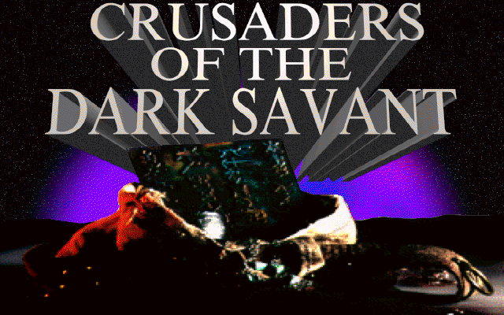
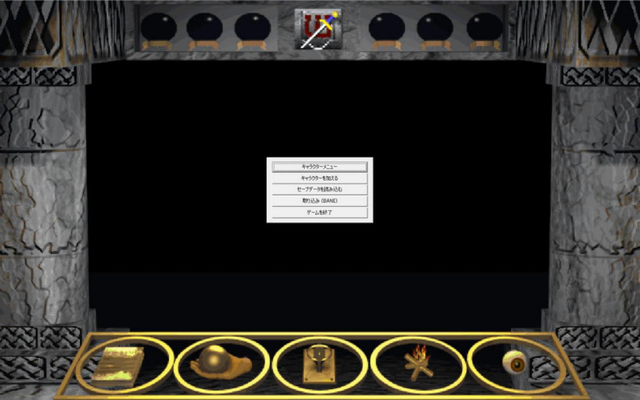
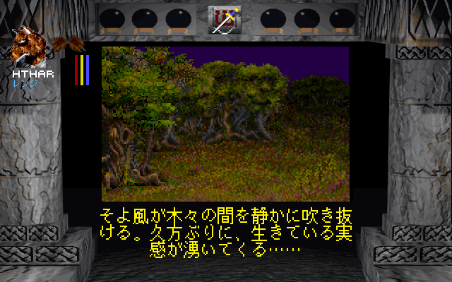
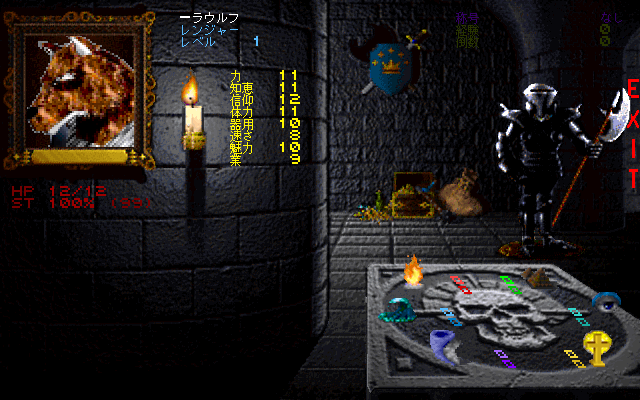
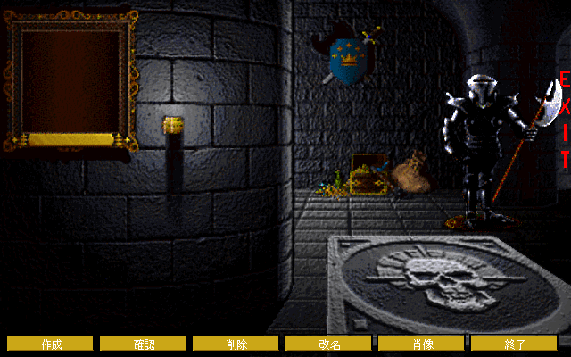
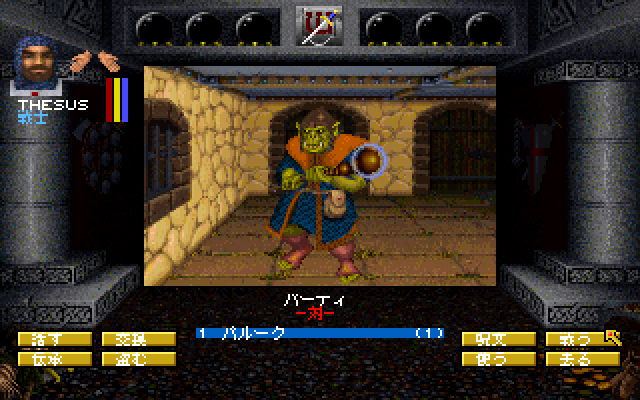

どんなゲーム？
ウィザードリィ7「Crusaders of the Dark Savant」は、1992年に発売されたシリーズ第7作です。前作の結末から物語が続き、惑星ガーディアを舞台に、 ダークサヴァントやさまざまな勢力と、秘宝をめぐって争います。Steam 版には、元の DOS 版と、Windows 向けに作り直された Wizardry Gold 版の両方が入っています。
種族・職業・呪文などの用語は、ウィザードリィ6 日本語化パッチとそろえています。訳文は 2 つの版で共通です。
Wizardry 7: Crusaders of the Dark Savant（Wizardry Gold 版・DOS 版）
Steam 版の「Wizardry 7: Crusaders of the Dark Savant」を、日本語で遊べるようにする非公式のファンメイドパッチです。 Steam 版に入っている Wizardry Gold（Windows 版）と、DOSBox で動く元の DOS 版の両方に対応しています。 物語や住人たちとの会話、メニュー、キャラクターの作成と能力の画面、戦闘の文言、品物・怪物・人物・呪文・職業・種族・称号の名前まで日本語にしています。 ゲームのフォルダにファイルを上書きで置くだけで日本語になります。
ウィザードリィ7「Crusaders of the Dark Savant」は、1992年に発売されたシリーズ第7作です。前作の結末から物語が続き、惑星ガーディアを舞台に、 ダークサヴァントやさまざまな勢力と、秘宝をめぐって争います。Steam 版には、元の DOS 版と、Windows 向けに作り直された Wizardry Gold 版の両方が入っています。
種族・職業・呪文などの用語は、ウィザードリィ6 日本語化パッチとそろえています。訳文は 2 つの版で共通です。






DSAVANT フォルダを、別の場所に丸ごとコピーして残しておきます。外すときに戻すと英語版に戻ります。Wizardry7_JP.zip を展開し、中の wizardry7gold フォルダと DSAVANT フォルダを、ゲームのフォルダに上書きでコピーします。
片方の版だけ日本語にしたいときは、そのフォルダだけをコピーします。ゲームのフォルダは、Steam でゲームを右クリック → 管理 → ローカルファイルを閲覧、で開く場所です（wizardry7gold・DSAVANT・dosbox_windows フォルダがある場所）。
| 版 | Steam の起動方法の選択 | 日本語化のしくみ |
|---|---|---|
| Wizardry Gold 版（Windows） | Play Wizardry 7: COTDS Gold Edition | wing32.dll と jpmod フォルダを追加するだけ（元のファイルは書き換えない） |
| DOS 版（DOSBox） | Play Wizardry 7: COTDS (MS-DOS) | DSAVANT の 19 個のファイルを日本語化したものに置き換える |
DOS 版は、起動の途中の保安認証（マニュアルの単語を入れる画面）で、何も入力せずに Enter を押すと進めます（Steam 版の元の動作です）。
wizardry7gold フォルダの中の wing32.dll と jpmod フォルダを削除すると、元の英語版に戻ります。DSAVANT フォルダのコピーを上書きで戻します。
コピーが無いときは Steam の「ゲームファイルの整合性を確認」で元のファイルに戻せますが、そのときキャラクターやセーブのデータも元に戻ってしまうことがあります。
先に PCFILE・SAVEGAME で始まるファイルを別の場所にコピーしておいてください。wizardry7gold フォルダのパスがおよそ 53 文字を超えると起き、
Steam の既定の場所 C:\Program Files (x86)\Steam\steamapps\common\… でも超えます）。このパッチではこの不具合を直しています。
音楽の読み込みの一部（休息のときの曲など）に同じ原因の所が残っていますが、こちらは直していません。jpmod フォルダの jpmod.ini で変えられます。起動時のメニューなど Windows の画面は拡大されません。WIZARD.EXE が違う版（Gold 1.1b 以外）では警告が出て、日本語化されずに英語のまま起動します。DSAVANT のファイルは Steam 版の DOS 版専用です。ほかの版のゲームには上書きしないでください。誤訳や不自然な訳に気づいたら、GitHub の Issues で教えてください。